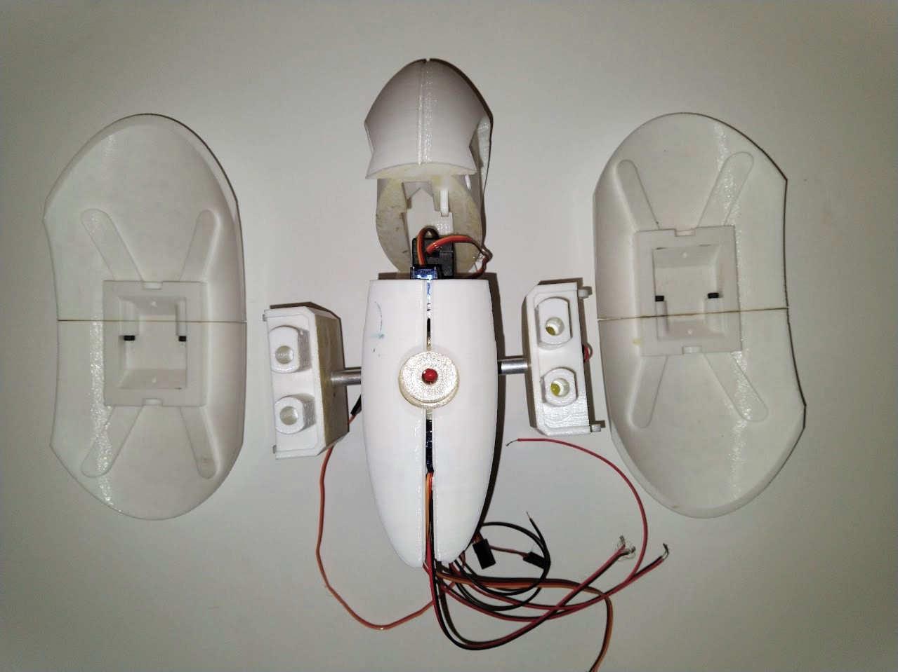

Computer Science • Engineering • Design
Resume: Open PDF
I am a high school student with a passion for robotics, coding, and tech, seeking an opportunity to teach and mentor younger students. I am always eager to share my experience in designing, building, and programming robots and electronics projects. I am a good communicator, quickly adapt to new environments, and a team player.
I enjoy teaching, and always try to volunteer at positions that allow me to do so. For example, I ran the junior VEX V5 section for STEM day for the visiting students, and taught them how to drive the robot. I also regularly tutor my sister and classmates.
Programmed a 3D renderer completely from scratch, and not using any tutorials. The only libraries it uses are a library for coloring pixels on a window. I learned about linear algebra, rendering and rasterising, then used my knowledge to create the project. Later I added multiplayer functionality.
I created this Arduino-based math toy to help my little sister learn math. It uses a keypad, LCD, and a custom point system to make learning more fun. I also designed a 3D-printed case for it. The design is very easy to repair.
This was my final project in grade 10 Computer Engineering, built with a partner. It’s a car controlled by phone using modified servos, with a turret and laser mounted using 3D printed parts. When our motor driver chip was stolen just 4 days before the deadline, I found a way to modify standard servos with resistors to make them spin continuously. The deadline that this project had taught me how to adapt under pressure and find out of the box solutions.
I developed a custom AI assistant with voice recognition, screenshot capability, using the Groq API and text-to-speech. The personality and voice is based off of the evil AI from Portal. Returing to this project, I made it so the tts output is generated by sentence for faster output.

A 3d printed turret that tracks a person as they walk through the room and “shoots” at them with LED lights. I greatly improved my soldering skills when making the body. I want integrate the GLaDOS assistant with this project, so I can have my own moving and customized AI assistant.
Grade 11 Student | Expected Graduation: 2027